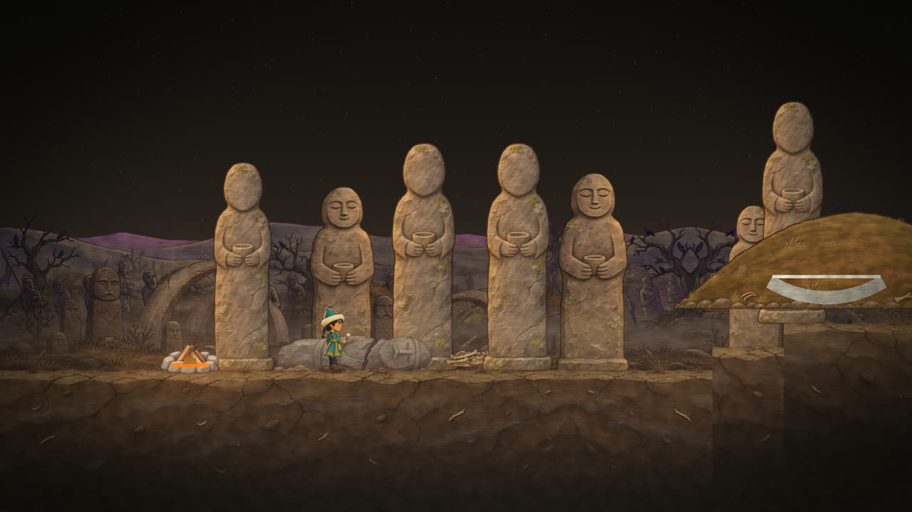

Hikâye
Bir gece baskınında Ay Su'nun kutu, insanı hayatta tutan yaşam gücü, koparılıp yer altına götürülür. Tolun obadaki ateşin başından yola çıkar, bir yarıktan aşağı iner ve katlar boyunca dibe doğru ilerler. Yolu Dede Korkut anlatır.
Oynanış
Tolun davul ve tokmakla dövüşür: vurur, atılır, köklerden sallanır, ırmağı salla geçer, kayadan kayaya atlayarak alt kata iner. Her katta yeni bir yetenek bulur ve katın sonundaki boss o yeteneği sınar. Yol üstünde keçe, su arkı ve yankı taşı bulmacaları çıkar. Oyun dokunmatik ekran için yapıldı; dövüşün hepsi iki başparmakla oynanır.
Yer altının katları



Sık sorulanlar
- KAM nedir?
- KAM, Türk mitolojisinden esinlenen, yandan görünümlü iki boyutlu bir aksiyon RPG'dir. Bağımsız olarak Türkiye'de geliştiriliyor.
- Kam kimdir?
- Kam, Türk halklarının geleneğinde ruhlar dünyasıyla insanlar arasında aracılık eden kişidir; Batı dillerinde "şaman" diye bilinir. Oyunun kahramanı Tolun genç bir kamdır.
- Kut nedir?
- Türk inançlarında kut, insanı hayatta ve ayakta tutan yaşam gücüdür. Oyunda Ay Su'nun kutu çalınır ve Tolun onu geri getirmeye çalışır.
- Oyundaki yaratıklar nereden geliyor?
- Albastı, Deli Dumrul ve Tepegöz Türk halk anlatılarından gelir. Öteki yaratıklar Altay, Saha, Tuva ve Hakas anlatılarından alınmıştır; birkaçı oyunun kendi icadıdır. Oyun içindeki defter hangisinin nereden geldiğini yazar.
- Hangi platformlarda çıkacak?
- Önce iOS (iPhone), ardından Android. Oyun Türkçe ve İngilizce.
- Ücretli mi?
- İlk kat ücretsiz ve reklamsız. Bölümün geri kalanı tek bir ödemeyle açılır. Abonelik ve ganimet kutusu yok; güç ve oyun parası satılmaz.
Anlatılar üzerine bir not
Oyun Altay, Saha, Tuva, Hakas ve Oğuz anlatılarından besleniyor; bu gelenekler bugün de yaşıyor. Oyundaki kurallar oyun için kuruldu, gerçek bir inancı ya da ayini anlatmaz. Yanlış ya da eksik bir şey görürsen bize yaz.